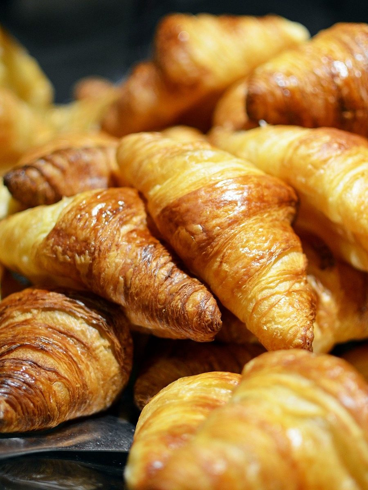
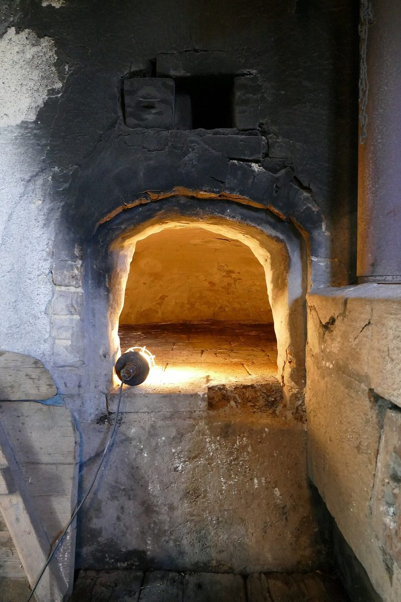

パン屋 / 群馬県桐生市
焼きたてパン コロール
群馬県桐生市にあるパン屋「焼きたてパン コロール」のご案内ページです。営業時間やメニューなど、詳しいことは準備中。電話番号とInstagramは確認できています。

ーは麺棒
制作側の連想
「コロール」の「ー」を、麺棒に見立てる
店名の由来は分かりません。制作側は「コロール」と並ぶ4つの文字のうち、真ん中の「ー」(長音)の横棒が、パン生地をのばす麺棒に見えました。そこでこのサイトでは、ロゴの「ー」を麺棒の形にし、ページの区切りごとに麺棒が通った跡を引いています。
これは制作側の連想で、お店の理念・由来とは無関係です。
麺棒の通り道(イメージ)
のばした生地の上に、並べてみました。
写真は国外・撮影地不明のフリー素材で、お店の商品ではありません。パンの雰囲気を伝えるためのイメージです。





ご案内
お店のこと(確認できたものだけ)
| 所在地 | 〒376-0031 群馬県桐生市本町１丁目２−２０ |
|---|---|
| 電話 | 0277-46-3643 |
| 営業時間 | 準備中 |
| 定休日 | 準備中 |
| ご予約 | 準備中 |
| 駐車場 | 準備中 |
| SNS | Instagram @tmu.famiry |